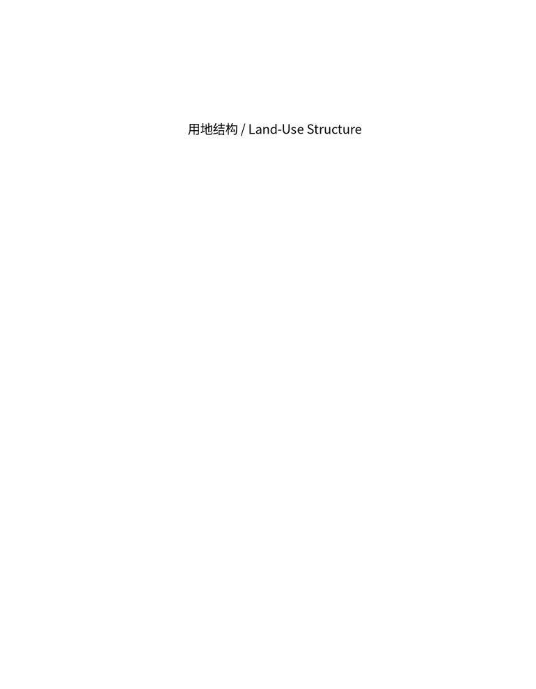
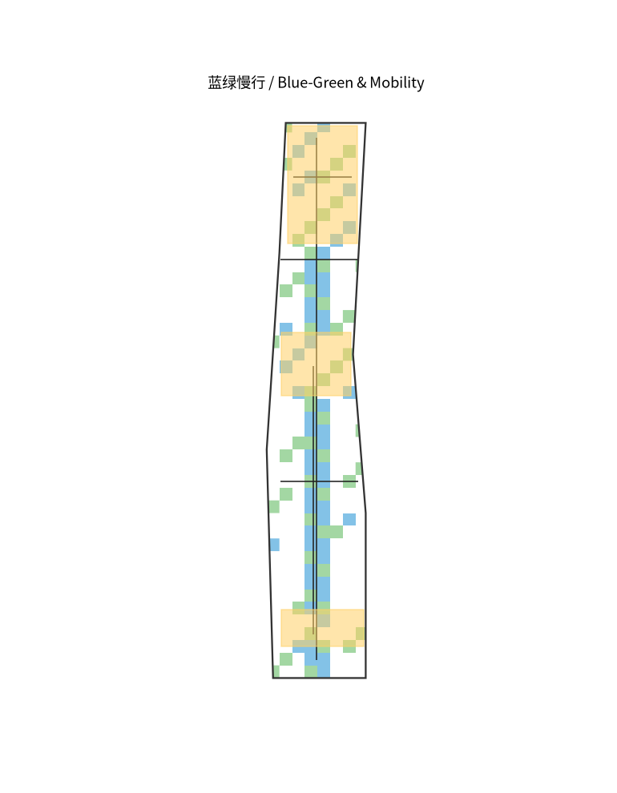
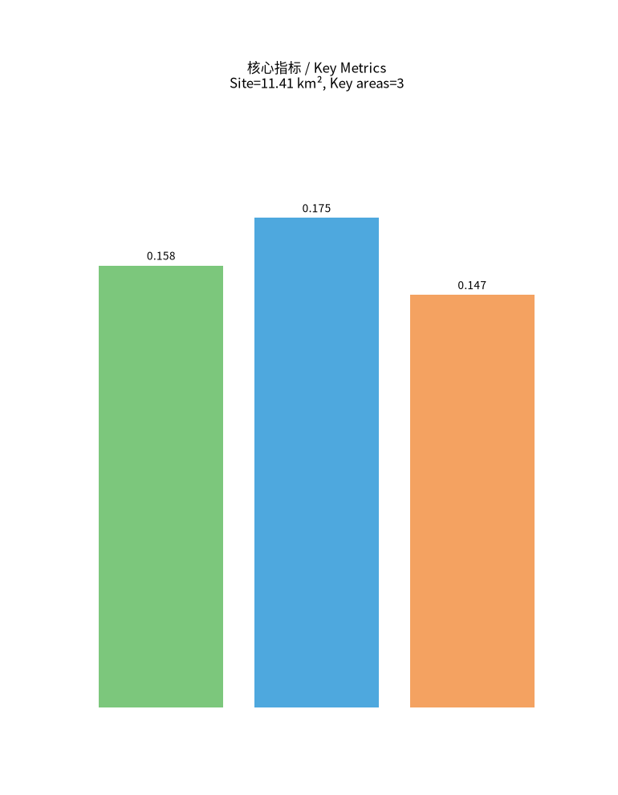

Centennial Jing-Zhang AI Innovation Belt: From Railway Heritage to an AI-Native Living Corridor
The following panels give an offline overview of the formal submission; no remote resources are loaded.
本方案为百年京张AI创新带城市设计 AI agent 提交包（formal / professional_design_package），配套 GeoJSON 图层、指标表、A3 文册、A0 展板与离线可视化。


